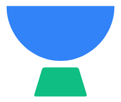
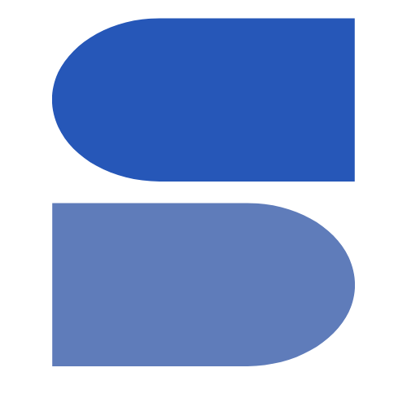
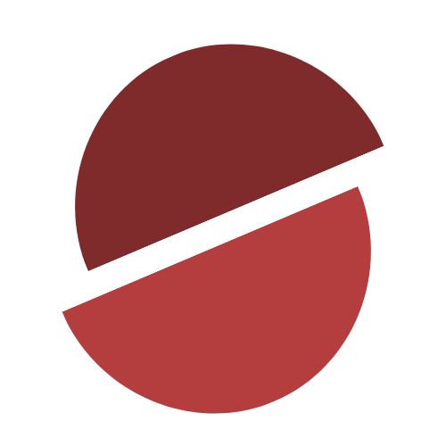
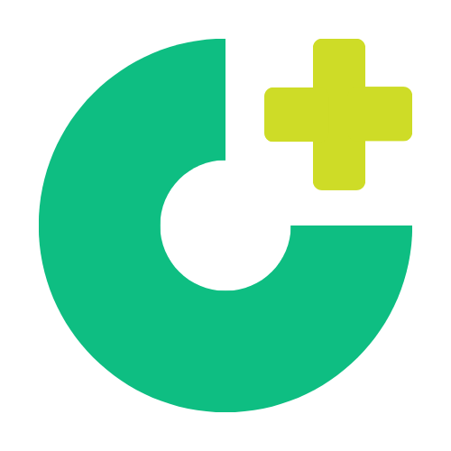

Portal Layanan Satuan Pendidikan
Pusat pengisian instrumen dan sistem informasi bagi satuan pendidikan. Data yang di inputkan menjadi basis pengukuran evaluasi dan peningkatan mutu layanan satuan pendidikan secara berkelanjutan.
BOSP
Bantuan Operasional Sekolah
KEJAR
Akses Data & Inklusi Keuangan
Konten Digital
Wadah materi pembelajaran digital
Kontrib Kondig
Galeri kontribusi pendidik

WERUH
Sistem monitoring capaian mutu
SIAP Upacara
Laporan kedisiplinan & rutinitas
SIMBA
Manajemen Bantuan Sarpras

SIMPRES
Sistem Manajemen Prestasi

SPAB
Satuan Pendidikan Aman Bencana

SPMB
Penerimaan Murid Baru Terpadu

CKG Sekolah
Cek Kesehatan Gratis Sekolah

Ajang Talenta
Informasi Seputar Ajang Talenta